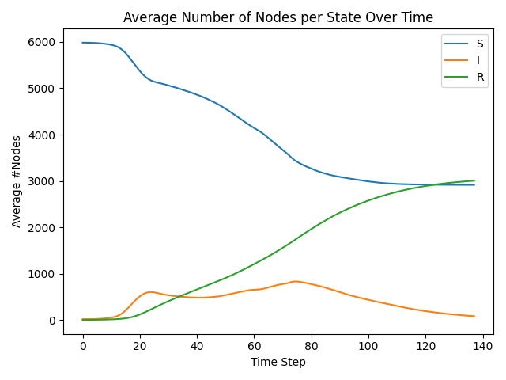

Tutorial
Example
Import
Import the required packages and select the propagation model:
import torch
from torch_geometric.datasets import Planetoid # or other datasets
from torch_geometric.utils import degree
from fs_gplib.Epidemics.SIRModel import SIRModel
Data
Read the graph data, using the data from the PyG package, which has a compressed matrix row structure.
dataset = Planetoid(root='./dataset', name='Cora')
data = dataset[0]
If the data is not in the compressed matrix row structure, it needs to be converted. See Data for the data structure construction.
If the data is a Networkx.Graph(), it can be converted using from_networkx.
import networkx as nx
from torch_geometric.utils import from_networkx
G = nx.florentine_families_graph()
data = from_networkx(G)
mapping = dict(zip(G.nodes(), range(G.number_of_nodes())))
Note
Note that the encoding methods for the two data formats are different, and the mapping needs to be used for comparison.
Seeds
The format of the seed nodes can be list or float.
The seed set can be calculated through various algorithms or specified by the user, with the following simple example selecting the top 10% of nodes based on degree centrality:
def Degree_centrality_seeds(data, num_seeds):
target = data.edge_index[1]
N = data.num_nodes
D = degree(target, N)
_, index = torch.sort(D, descending=True)
seeds = index[:num_seeds]
return seeds.tolist()
num_seeds = int(data.num_nodes*0.1)
seeds = Degree_centrality_seeds(data, num_seeds)
Also, the seed set can be generated randomly. See the next section for details.
Instantiate Model
After importing the data, the seed set, and confirming the model parameters, build the model:
i_beta=0.01 # infection
r_lambda=0.005 # recovery
device = 1 # device
model = SIRModel(data, seeds, i_beta, r_lambda, device)
The parameters required for each model are described in the model introduction section.
If there is no seed set, the seed set can be generated randomly by setting seeds to float, and the corresponding proportion of seed nodes can be generated:
seeds = 0.3 # ratio of seeds
i_beta=0.01 # infection
r_lambda=0.005 # recovery
device = 1 # device
model = SIRModel(data, seeds, i_beta, r_lambda, device)
# check the seeds set
print(model.seeds)
If you want to make the randomly generated seeds reproducible, please add a random seed when building the model:
seeds = 0.3 # ratio of seeds
i_beta=0.01 # infection
r_lambda=0.005 # recovery
device = 1 # device
model = SIRModel(data, seeds, i_beta, r_lambda, device, rand_seed=33)
# check the seeds set
print(model.seeds)
Execute simulation
There are four different running interfaces:
Model.run_iteration(): Execute one time step from the current node state and return the updated node state.Model.run_iterations(times): Execute multiple time steps starting from the current node state and return the final node state after all iterations.Model.run_epoch(times): Execute multiple time steps starting from the initial state and return the final node state after all iterations.Model.run_epochs(epochs, times, batch_size): Perform multiple Monte Carlo simulations in batches, each starting from the initial state, and return the final node states.
An example of running:
MC = 10000 # simulation times
it = 100 # iteration times
bs = 2000 # batch size
finals = model.run_epochs(MC, it, bs)
Example code
A complete example:
import torch
from torch_geometric.datasets import Planetoid
from torch_geometric.utils import degree
from fs_gplib.Epidemics.SIRModel import SIRModel
def Degree_centrality_seeds(data, num_seeds):
target = data.edge_index[1]
N = data.num_nodes
D = degree(target, N)
_, index = torch.sort(D, descending=True)
seeds = index[:num_seeds]
return seeds.tolist()
dataset = Planetoid(root='./dataset', name='Cora')
data = dataset[0]
num_seeds = int(data.num_nodes*0.1)
seeds = Degree_centrality_seeds(data, num_seeds)
i_beta=0.01
r_lambda=0.005
device = 1
model = SIRModel(data, seeds, i_beta, r_lambda, device)
MC = 10000
it = 100
bs = 2000
finals = model.run_epochs(MC, it, bs)
count = (finals>0).sum().item()/MC
print(f'Final spread range is {count}')
An example for DySIRModel:
import torch
import random
from torch_geometric.datasets import BitcoinOTC
import matplotlib.pyplot as plt
import numpy as np
from fs_gplib.Dynamic.DySIRModel import DySIRModel
def plot_dy_sir(finals):
# finals.shape: (num_timesteps (T), MC, num_nodes)
if isinstance(finals, torch.Tensor):
finals_np = finals.cpu().numpy()
else:
finals_np = np.array(finals)
T = finals_np.shape[0]
MC = finals_np.shape[1]
N = finals_np.shape[2]
all_states = np.unique(finals_np)
avg_state_cnt = []
for t in range(T):
state_cnt = []
for s in all_states:
# (MC, N) == s -> sum over nodes, then mean over MC runs
count = np.sum(finals_np[t] == s, axis=1)
state_cnt.append(np.mean(count))
avg_state_cnt.append(state_cnt)
avg_state_cnt = np.array(avg_state_cnt) # (T, num_state)
for idx, s in enumerate(all_states):
plt.plot(range(T), avg_state_cnt[:, idx], label=f"State {s}")
plt.xlabel("Time Step")
plt.ylabel("Average #Nodes")
plt.title("Average Number of Nodes per State Over Time")
plt.legend(["S", "I", "R"])
plt.tight_layout()
plt.show()
dataset = BitcoinOTC(root="./dataset")
data = dataset[0]
seeds = data.edge_index[1].unique().tolist()
# use weight or not
use_weight = False
if use_weight:
print("Using weight")
random.seed(42)
edge_attr = torch.tensor(
[random.random() for _ in range(data.edge_index.shape[1])]
)
data.edge_attr = edge_attr
infection_beta = 0.1
recovery_lambda = 0.05
device = 'cpu' #0
MC = 1000
x = torch.arange(data.num_nodes)
edge_index_list = [dataset[i].edge_index for i in range(len(dataset))]
model = DySIRModel(x, edge_index_list, seeds, infection_beta, recovery_lambda, device, use_weight)
finals = model.run_epochs(MC, batch_size=100)
plot_dy_sir(finals)
The Output:
{kind=link}

About Batch
The core of the batch parallel algorithm for macroscopic acceleration, used in Model.run_epochs(epochs, times, batch_size).
How to use batch
Batch parallel allows multiple simulations to run simultaneously, but the batch size cannot be increased indefinitely because it is constrained by hardware resources. If the batch size is too large, out-of-memory errors may occur. If you are interested in the impact of batch size on running efficiency, you can refer to the experimental results in Section 5.3.2 [1]. Users can find the appropriate batch size through an exponential decrease.
About Distributed
The distributed method is suitable for extremely large data that cannot be processed on a single machine. The core of the distributed method is to divide the data by the target nodes, so that the data volume between subgraphs is not skewed, and only one synchronization is performed at each time step.
This method can be used to simulate the propagation of extremely large graphs on single-card devices, multi-card devices, and multi-machine multi-card devices.
How to use distributed computing
The algorithm library does not include distributed code, but provides a data division method.
An implementation example is given:
import argparse
import os
import numpy as np
import torch
from torch_geometric.datasets import Planetoid
from torch_geometric.utils import degree
import torch.distributed as dist
from tqdm import tqdm
from fs_gplib.Epidemics.SIRModel import SIRModel
from fs_gplib.DistributedComputing.DistributedComputing import GraphPartitioner, load_partition
def parse_args():
parser = argparse.ArgumentParser(description="Distributed SIR Simulation (fs-gplib)")
parser.add_argument("-d", "--dataset", default="Yelp", choices=["Cora", "PubMed"], help="Dataset name")
parser.add_argument("-p", "--parts", type=int, default=4, help="Number of partitions / processes")
parser.add_argument("-s", "--steps", type=int, default=100, help="Number of iterations per MC run")
parser.add_argument("-mc", "--MC", type=int, default=1000, help="Number of Monte Carlo simulations")
parser.add_argument("-rp", "--read_pt", action="store_true", help="Read existing .pt partition files instead of re-partitioning")
return parser.parse_args()
def get_degree_seeds(data, num_seeds: int):
deg = degree(data.edge_index[1], data.num_nodes, dtype=torch.float)
deg, idx = torch.sort(deg, descending=True)
return idx[:num_seeds].tolist()
def load_data(dataset_name: str):
if dataset_name == "Cora":
dataset = Planetoid(root="./dataset", name="Cora")
elif dataset_name == "PubMed":
dataset = Planetoid(root="./dataset", name="PubMed")
else:
raise ValueError(f"Unsupported dataset: {dataset_name}")
return dataset[0]
def main():
args = parse_args()
infection_beta = 0.01
recovery_lambda = 0.005
local_rank = int(os.environ["LOCAL_RANK"])
torch.cuda.set_device(local_rank)
dist.init_process_group(backend="nccl", init_method="env://", device_id=torch.device(f"cuda:{local_rank}"))
rank = dist.get_rank()
world_size = dist.get_world_size()
device_id = rank % torch.cuda.device_count()
if rank == 0:
final_count = []
data = load_data(args.dataset)
print(f"Loaded dataset {args.dataset}, edge_index device = {data.edge_index.device}")
seeds = get_degree_seeds(data, int(data.num_nodes * 0.1))
if not args.read_pt:
print("Start graph partitioning...")
t_s = time.time()
partitioner = GraphPartitioner(
data,
n_parts=world_size,
root=f"./dataset/{args.dataset}",
)
partitioner.generate_partition()
print(f"Partitioning done in {time.time() - t_s:.2f} s")
else:
seeds = None
dist.barrier()
seed_list = [seeds] if rank == 0 else [None]
dist.broadcast_object_list(seed_list, src=0)
seeds = seed_list[0]
sub_data, sub_targets = load_partition(f"./dataset/{args.dataset}", rank)
model = SIRModel(
sub_data,
seeds=seeds,
infection_beta=infection_beta,
recovery_lambda=recovery_lambda,
device=device_id,
)
mask = torch.ones_like(model.node_status["SI"], dtype=torch.bool)
mask[sub_targets] = False
bar = tqdm(range(args.MC)) if rank == 0 else range(args.MC)
torch.cuda.reset_peak_memory_stats(device_id)
for i, _ in enumerate(bar):
model._init_node_status()
if rank == 0:
bar.set_description(f"MC {i}")
for step in range(args.steps):
model.run_iteration()
synced_status = {}
for key, value in model.node_status.items():
value[mask] = False
int_status = value.to(dtype=torch.uint8)
dist.all_reduce(int_status, op=dist.ReduceOp.SUM)
torch.cuda.synchronize(device_id)
synced_status[key] = int_status.bool()
model.node_status = synced_status
if rank == 0:
final_state = model._return_final(model.node_status.values())
infected_count = (final_state == 1).sum().item()
final_count.append(infected_count)
if rank == 0:
print(f"[Rank {rank}] Final infected count: {np.mean(final_count)}")
print(f'max: {np.max(final_count)}')
print(f'min: {np.min(final_count)}')
if dist.is_initialized():
dist.destroy_process_group()
if __name__ == "__main__":
main()
The running method of this code is:
CUDA_VISIBLE_DEVICES=1,2,3,4,5,6 torchrun --nnodes=1 --nproc_per_node=6 --node_rank=0 --master_addr=127.0.0.1 --master_port=12345 test_DC.py -d Webbase -s 100 -mc 1000
Command line interpretation:
CUDA_VISIBLE_DEVICES=1,2,3,4,5,6Restricts the script to only use GPUs with device IDs 1 through 6. These are the GPU IDs made visible to the process.
torchrunThe PyTorch launcher used for distributed training/simulation across multiple processes or GPUs.
--nnodes=1Specifies that only one physical machine (node) is involved in the computation.
--nproc_per_node=6Launches 6 separate processes on the single node, typically one per GPU (corresponding to the 6 visible GPUs).
--node_rank=0Indicates the rank of this node in a multi-node setup. Since there’s only one node, it’s rank 0.
--master_addr=127.0.0.1Sets the IP address of the master node (localhost in this case).
--master_port=12345Sets the port used for inter-process communication.
test_DC.pyThe Python script to be executed, which performs a distributed SIR simulation.
-d WebbaseSpecifies the dataset to use (Webbase in this case).
-s 100Sets the number of simulation steps per Monte Carlo run to 100.
-mc 1000Specifies that 1000 Monte Carlo simulations will be run.